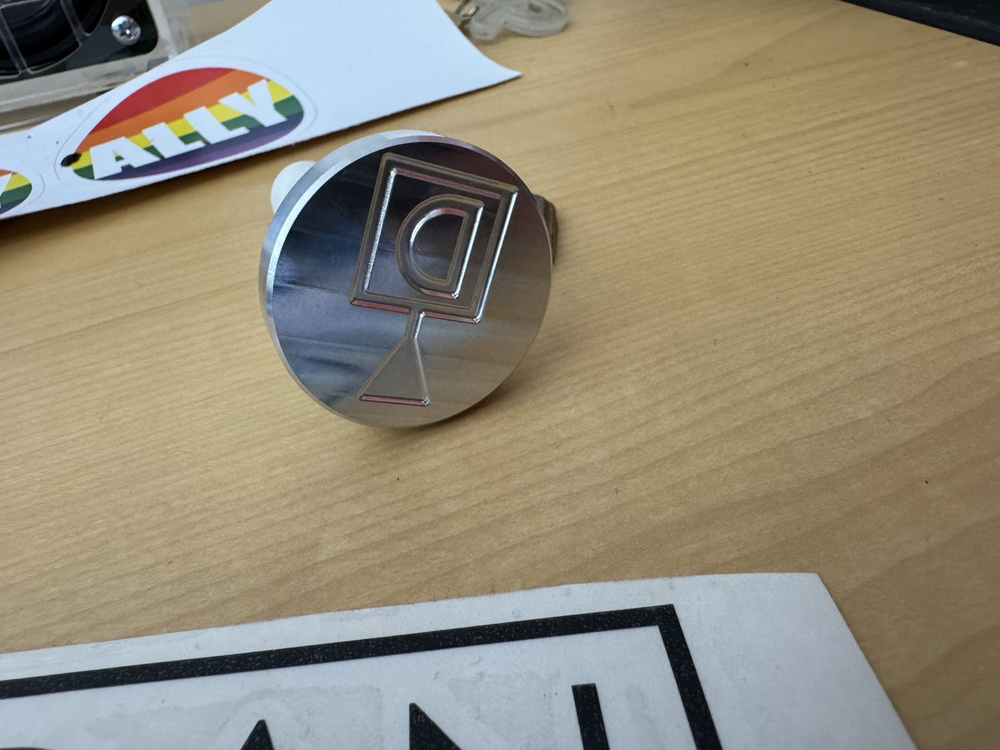

Timeline
Project Development
I designed and machined a wax seal stamp intended to leave a custom emblem with enough fidelity to remain legible in wax. The part required small features, complex toolpaths, and a material with good heat conductivity, which made CNC-machined aluminum a strong fit. A major focus was repeatable workholding for small parts. I used custom fixturing and soft-jaw style workholding so the stamp heads could be machined reliably while still fitting the handle assembly and standard fasteners. Rapid prototyping helped move the project to completion before the deadline.

-
Concept
Defined Fidelity and Assembly Goals
Set the goal of creating a CNC-machined stamp that could leave a legible custom wax emblem.
- Needed small, detailed features.
- Needed to fit handle assembly and fasteners.
- Selected aluminum for machinability and heat conductivity.
-
Design/manufacturing
Designed Repeatable Workholding
Created custom workholding to secure small stamp heads during machining.
- Focused on repeatability and reliability.
- Used soft-jaw style fixturing.
- Accounted for small part geometry and tool access.
-
Machining
Machined Detailed Stamp Features
Ran CNC toolpaths for the emblem geometry and assembly features.
- Managed complex toolpaths.
- Balanced feature fidelity with tool life and time.
- Machined features needed for assembly fit.
-
Validation
Tested Wax Impression
Verified the stamp could leave a readable wax emblem using a temporary handle.
- Observed wax impression quality.
- Confirmed functional concept.
- Final measurement data TBD.